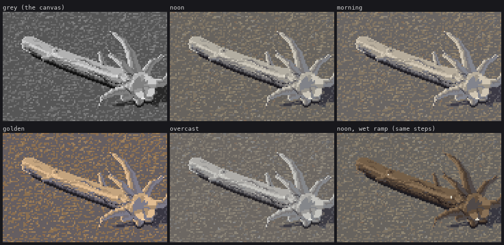
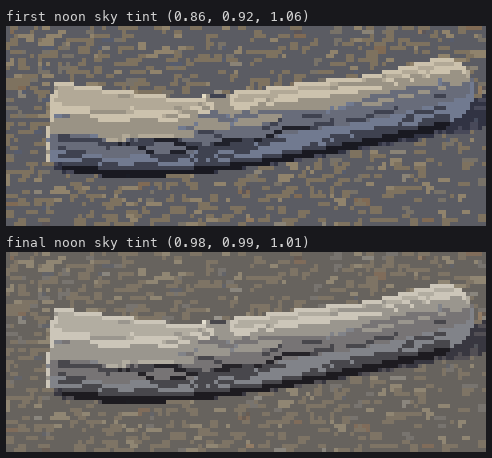
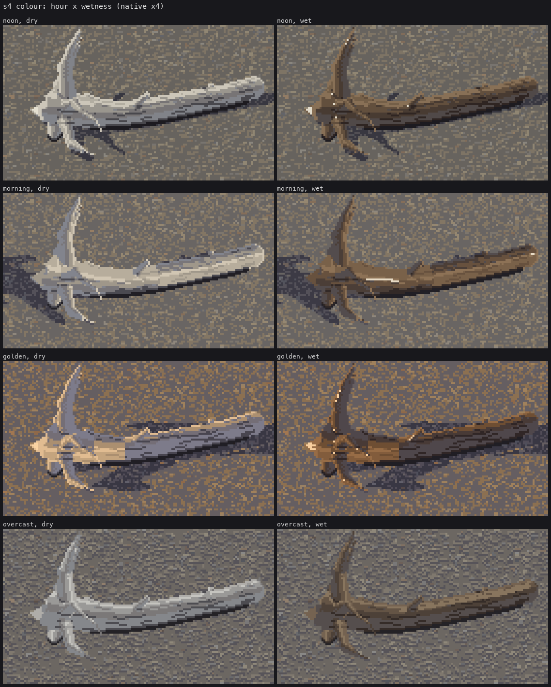
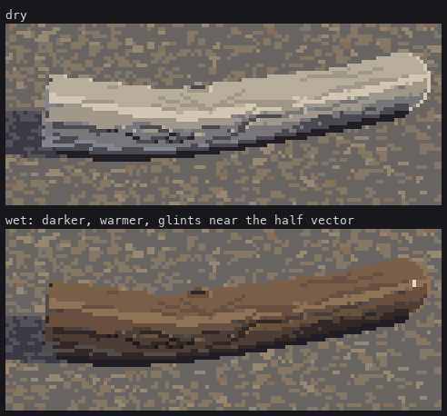

Trigger: any hour, any weather, dry or wet. The form is decided once; this lesson only changes colours.
Everything before this lesson paints an index canvas: a material id and a step 0–7 per pixel. Colour happens at the very end:
# code/render.py
def to_rgb(cv, ramps):
out = np.zeros(cv.mat.shape + (3,), np.uint8)
for m, r in ramps.items():
sel = cv.mat == m
out[sel] = np.asarray(r, np.uint8)[np.clip(cv.step[sel], 0, len(r) - 1)]
return out
That's Ferrari's own structure: in Living Worlds the morning and afternoon versions of a scene are the same index map with different palettes. It paid off at once. The light sweep, the hour sweep and the wet sweep are the same canvas through different ramps.

Each material has one 8-step ramp in the value plan proved in greyscale: 0 contact | 1 deep | 2 core | 3 reflected rim || 4 halftone | 5 lit edge | 6 light | 7 face or glint. Each hour multiplies the lit steps by the sun's colour and the shadow steps by the sky's. It is a hue walk along one ramp, never white or black added.
# code/palette.py
HOURS = { # (critic r9: my first shadow shift was ~3x too strong; these are a third of it)
'noon': dict(sun=(1.00, 0.99, 0.96), sky=(0.98, 0.99, 1.01), lift=0.0),
'morning': dict(sun=(1.02, 0.98, 0.92), sky=(0.97, 0.98, 1.02), lift=0.02),
'golden': dict(sun=(1.10, 0.93, 0.74), sky=(0.93, 0.91, 1.00), lift=0.02),
'overcast': dict(sun=(0.98, 0.99, 1.00), sky=(0.98, 0.99, 1.00), lift=0.03),
}
# base (neutral) ramps, value-first. Restraint: the core is a WARM grey (Ferrari's trunk core
# 131,123,123), only the reflected rim leans cool, and not far.
BASE = {
WOOD: [(38, 36, 40), (74, 72, 76), (122, 118, 116), (132, 133, 136), (154, 152, 148),
(178, 175, 168), (204, 201, 193), (228, 226, 217)],
...
}
LIT = np.array([0, 0, 0, 0, 1, 1, 1, 1], float)
def ramps(hour='noon', wet=0.0):
...
mul = LIT[:, None] * sun + (1 - LIT[:, None]) * sky
if hour == 'overcast':
r[4:7] = r[4:7] * 0.92 + r[4] * 0.08 # no sun: the lit steps compress toward the halftone
mul = np.tile(sky, (8, 1))
r = r * mul
r = r + h['lift'] * 255 * (1 - r / 255) # haze lifts the black point
Cooling the shadow side is right; how much is where I went wrong, twice.
The final sky multipliers are a third of the first ones.

figs.py shadowhue swaps in the first noon entry, sky=(0.86, 0.92, 1.06), for one render.
The rule behind it is in Ferrari's own trunk (lesson 1). His core is a warm grey, and only the outermost rim column leans blue, by about 20 levels of blue over red. Cool shadows stay close in value and chroma to their neighbours.
Golden hour is the one place the violet is allowed to show, as in his dusks: warm rims on a violet shadow side.

A log lying in or just out of the water is darker by about a third, warm brown (tannin), with its lit steps compressed, and a sharp near-white glint. Wet things are dark with sharp highlights. Without the glint, a wet log just looked like a brown log.
The ramp is a palette change (WETW); the glint is the only index change:
# code/render.py
def wet_logs(cv, buf, logs, cam, light, sh):
V = -cam.f
Hv = light.L + V
Hv = Hv / np.linalg.norm(Hv) # the half vector between sun and eye
if light.overcast:
Hv = np.array([0, 0, 1.0]) + V; Hv = Hv / np.linalg.norm(Hv)
for k, lg in enumerate(logs):
if lg.wet < 0.5:
continue
m = (buf['obj'] == k) & (cv.mat == WOOD)
cv.mat[m] = WETW
spec = m & ((buf['N'] @ Hv) > (0.992 if not light.overcast else 0.97)) & ~sh
cv.step[spec] = 7 if not light.overcast else 6
N·H > 0.992 is within about 7° of the mirror direction. On a cylinder that is a thin broken run along the top, which is exactly what you see on a wet log in a photo. Under overcast the glint follows the bright sky overhead: broader (0.97) and dimmer (step 6).

Honest comparison. Beside the braided-bar photo, my dry noon log has the right family: silver with cool shadows and pale tops. The photo's wood is colder and bluer overall than mine; that's Svalbard light, and I stayed a little warm. The critic judged the wet version convincing, and the photographs agree: wet driftwood does go that dark.